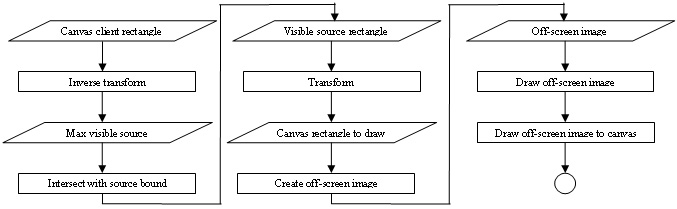

| Eclipse Corner Article |

Summary
This article shows how to extend SWTCanvasto implement a mini image viewer plug-in using Java2D transforms. The extended image canvas can be used to scroll and zoom large images, and can also be extended to apply other transforms. The implementation is based on SWT and the non-UI portions of AWT. The plug-in has been tested on Windows, Linux GTK, and Mac OS X Carbon with Eclipse 2.1 or better.By Chengdong Li (cdli@ccs.uky.edu) Research in Computing for Humanities, University of Kentucky
March 15, 2004
The following typographic conventions are used in this article:
Italic:
Used for references to articles.
Courier New:The following terms are used in this article:
client area
The
drawable area of canvas. Also called the paint area or canvas domain.
source image
The image constructed directly from
the original image data with the same width and height. Unlike image data, it is
device dependent. It is the sourceImage in source
code. Also called the original image or image domain.
The goal of this article is to show you how to implement an image viewer with scrolling and zooming operations using affine transforms. If you are new to graphics in SWT, please read Joe Winchester's article Taking a look at SWT Images. A screenshot of the image viewer is shown in Figure 1:
Figure 1 - Image viewer
The implementation here is different from the implementation of the Image Analyzer example that comes with Eclipse. This implementation uses affine transforms for scrolling and zooming.
The advantages of this implementation are :
In the following sections, we will first review the structure of the package
and relationship of classes,
then we will discuss how the image canvas works and how to implement a scrollable
and zoom-able image canvas - SWTImageCanvas. We will use
affine transforms to selectively render images and to generally simplify the implementation. After that, we will show
briefly how to use the local toolbar to facilitate image manipulation.
For the detailed steps on how to implement a view, Dave Springgay's article: Creating an Eclipse View is the most helpful one.
You can compare this implementation with the Image Analyzer example by running both of them:
To compile and run the image viewer from source code, unzip the imageviewersrc.zip file (inside imageviewer.zip), then import the existing project into the workspace, update the class path, compile, and run.
The following diagram (Figure 2) shows all classes in this demo plug-in. The SWTImageCanvas is a subclass of
org.eclipse.swt.widgets.Canvas;
it implements image loading, rendering, scrolling, and zooming. The ImageView class is a subclass of
org.eclipse.ui.part.ViewPart; it has an SWTImageCanvas instance. The helper class
SWT2Dutil holds utility
functions. PushActionDelegate implements
org.eclipse.ui.IViewActionDelegate; it delegates the toolbar button actions,
and has an ImageView instance. The
ImageViewerPlugin extends org.eclipse.ui.plugin.AbstractUIPlugin
(this class is PDE-generated).
Figure 2 - Class diagram ( The classes without package prefix are implemented
in our approach. )
A plug-in manifest file plugin.xml defines the runtime requirements and contributions (view and
viewActions extensions) to
Eclipse. Eclipse will create toolbar buttons
for ImageView and delegate toolbar actions via PushActionDelegate.
SWTImageCanvas handles image loading,
painting, scrolling, and
zooming. It saves a copy of the original SWT image (the sourceImage)
in memory, and then translates and scales
the image using java.awt.geom.AffineTransform. The
rendering and transformation are applied only to the portion of the image
visible on the
screen, allowing it to operate on images of any size with good performance. The AffineTransform
gets applied changes as the user scrolls the window and pushes the toolbar buttons.
First, let's have a look at how to load an image into memory. There are several ways to load an image:
In this simple implementation, we only allow the user to choose an image from
the local file
system. To improve this, you could contribute to the org.eclipse.ui.popupMenus
of the Navigator view for image files; that way, whenever an image file is selected, the menu item will be available and
the user can choose to load the image
from the workspace (you need add nameFilters, and you may also need to use workspace
API). To see how to load an image from a URL, please refer to
the Image Analyzer of SWT
examples.
The image loading process is as following (Figure 3):
Figure 3 - Image-loading diagram
Now let's take a look at the code for loading images.
SWT
provides ImageLoader to load an image into memory.
Image loading is done by using the Image(Display,String) constructor. To facilitate image loading, we provides a
dialog to locate all image files supported by SWT ImageLoader.
public void onFileOpen(){
FileDialog fileChooser = new FileDialog(getShell(), SWT.OPEN);
fileChooser.setText("Open image file");
 fileChooser.setFilterPath(currentDir);
fileChooser.setFilterExtensions(
new String[] { "*.gif; *.jpg; *.png; *.ico; *.bmp" });
fileChooser.setFilterNames{
new String[] { "SWT image" + " (gif, jpeg, png, ico, bmp)" });
String filename = fileChooser.open();
if (filename != null){
fileChooser.setFilterPath(currentDir);
fileChooser.setFilterExtensions(
new String[] { "*.gif; *.jpg; *.png; *.ico; *.bmp" });
fileChooser.setFilterNames{
new String[] { "SWT image" + " (gif, jpeg, png, ico, bmp)" });
String filename = fileChooser.open();
if (filename != null){
 loadImage(filename);
loadImage(filename);
 currentDir = fileChooser.getFilterPath();
}
}
public Image loadImage(String filename) {
if(sourceImage!=null && !sourceImage.isDisposed()){
sourceImage.dispose();
sourceImage=null;
}
sourceImage= new Image(getDisplay(),filename);
currentDir = fileChooser.getFilterPath();
}
}
public Image loadImage(String filename) {
if(sourceImage!=null && !sourceImage.isDisposed()){
sourceImage.dispose();
sourceImage=null;
}
sourceImage= new Image(getDisplay(),filename);
 showOriginal();
return sourceImage;
}
showOriginal();
return sourceImage;
}
We use currentDir in  and
and  to remember the directory for the file open dialog, so that the user can later open other files
in the same directory.
to remember the directory for the file open dialog, so that the user can later open other files
in the same directory.
The loadImage method (shown above) in  disposes the old
disposes the old sourceImage and creates a new sourceImage,
then it calls the showOriginal() to notify the canvas to
paint new image. If loading fails, the canvas will clear the painting area
and disable the scrollbar. Notice that we cannot see ImageLoader
directly in the code above, however, when we call Image(Display,
String) in
, Eclipse will call
ImageLoader.load() to
load the image into memory.  is used to show the image at its original size; we will
discuss this in more detail later.
is used to show the image at its original size; we will
discuss this in more detail later.
 In fact, the above two functions
could be merged into one method. The reason why we separate them is we
may invoke them separately from other functions; for example, we may get the image file
name from the database, then we can reload the image by only calling
In fact, the above two functions
could be merged into one method. The reason why we separate them is we
may invoke them separately from other functions; for example, we may get the image file
name from the database, then we can reload the image by only calling loadImage().
Now, let's see how to create a canvas to render the image and do some transformations.
The org.eclipse.swt.widgets.Canvas
is suitable to be extended for rendering images. SWTImageCanvas
extends it and adds scrollbars. This is done by setting the SWT.V_SCROLL
and SWT.H_SCROLL style bits at the Canvas
constructor:
public SWTImageCanvas(final Composite parent, int style) {
super(parent,style|SWT.BORDER|SWT.V_SCROLL|SWT.H_SCROLL
|SWT.NO_BACKGROUND);
addControlListener(new ControlAdapter() { /* resize listener */
public void controlResized(ControlEvent event) {
syncScrollBars();
}
});
addPaintListener(new PaintListener() { /* paint listener */
public void paintControl(PaintEvent event) {
paint(event.gc);
}
});
initScrollBars();
}
private void initScrollBars() {
ScrollBar horizontal = getHorizontalBar();
horizontal.setEnabled(false);
horizontal.addSelectionListener(new SelectionAdapter() {
public void widgetSelected(SelectionEvent event) {
scrollHorizontally((ScrollBar) event.widget);
}
});
ScrollBar vertical = getVerticalBar();
vertical.setEnabled(false);
vertical.addSelectionListener(new SelectionAdapter() {
public void widgetSelected(SelectionEvent event) {
scrollVertically((ScrollBar) event.widget);
}
});
}
 In order to speed up the
rendering process and reduce flicker, we set the style to
In order to speed up the
rendering process and reduce flicker, we set the style to SWT.NO_BACKGROUND
in  (and later we use double buffering to render) so that the background (client area) won't be cleared.
The new image will be
overlapped on the background. We need to fill the gaps between the new image and
the background when the new image does not fully cover the background.
(and later we use double buffering to render) so that the background (client area) won't be cleared.
The new image will be
overlapped on the background. We need to fill the gaps between the new image and
the background when the new image does not fully cover the background.
 registers a
resize listener to synchronize the
size and position of the scrollbar thumb to the image zoom scale and
translation;
registers a
resize listener to synchronize the
size and position of the scrollbar thumb to the image zoom scale and
translation;  registers a paint listener (here it does
registers a paint listener (here it does paint(GC gc))
to render the image whenever the PaintEvent
is fired;
registers the SelectionListener
for each scrollbar,
the SelectionListener
will notify SWTImageCanvas to scroll and zoom
the image based on the current selection of scrollbars; another function of the SelectionListener
is to enable or disable the scrollbar based on the image size and zoom scale.
Whenever the SWT PaintEvent is fired, the paint listener (paint(GC
gc))
will be called to paint the
damaged area. In this article, we simply paint the whole client area of the
canvas (see Figure 4).
Since we support scrolling and zooming, we need to figure out which part of
the original image should be drawn to which part of the client area. The painting process is as
following:
imageRect inside the source
image (image domain); the image inside this rectangle will be drawn to the client area of canvas (canvas
domain).imageRect to the client area and
get destRect.imageRect to destRect
(scaling it if the sizes are different).
Figure 4 - Rendering scenarios
1) and 2) can be done based on AffineTransform, which we will discuss next.
3) draws a part of the source image to the client area using GC's drawImage:
drawImage
(Image image, int srcX, int srcY, int srcWidth, int srcHeight,
int destX, int destY, int destWidth, int destHeight)
which copies a rectangular area from the source image into a destination rectangular area and automatically scale the image if the source rectangular area has a different size from the destination rectangular area.
If we draw the image directly on the screen, we need to calculate the gaps in 4) and fill them. Here we make use of double buffering, so the gaps will be filled automatically.
 We use the following
approach to render the image: We save only the source image. When the canvas needs to update the visible area,
it copies the corresponding image area from the source image to the destination area on
the canvas. This approach can
offer a very large zoom scale and save the memory, since it does not
need to save the whole big zoomed image. The drawing process is also speeded up.
If the size of canvas is very huge, we could divide the canvas into several small
grids, and render each grid using our approach; so this approach is to some extent scalable.
We use the following
approach to render the image: We save only the source image. When the canvas needs to update the visible area,
it copies the corresponding image area from the source image to the destination area on
the canvas. This approach can
offer a very large zoom scale and save the memory, since it does not
need to save the whole big zoomed image. The drawing process is also speeded up.
If the size of canvas is very huge, we could divide the canvas into several small
grids, and render each grid using our approach; so this approach is to some extent scalable.
The Image Analyzer example that comes with Eclipse draws the whole zoomed image, and scrolls the zoomed image (which is saved by system) to the right place based on the scrollbar positions. This implementation works well for small images, or when the zoom scale is not large. However, for large-sized images and zoom scale greater than 1, the scrolling becomes very slow since it has to operate on a very large zoomed image. This can be shown in Image Analyzer.
Now let's look at the code used to find out the corresponding rectangles in the source image and the client area:
private void paint(GC gc) {
1 Rectangle clientRect = getClientArea(); /* canvas' painting area */
2 if (sourceImage != null) {
3 Rectangle imageRect=SWT2Dutil.inverseTransformRect(transform, clientRect);
4
5 int gap = 2; /* find a better start point to render. */
6 imageRect.x -= gap; imageRect.y -= gap;
7 imageRect.width += 2 * gap; imageRect.height += 2 * gap;
8
9 Rectangle imageBound=sourceImage.getBounds();
10 imageRect = imageRect.intersection(imageBound);
11 Rectangle destRect = SWT2Dutil.transformRect(transform, imageRect);
12
13 if (screenImage != null){screenImage.dispose();}
14 screenImage = new Image( getDisplay(),clientRect.width, clientRect.height);
15 GC newGC = new GC(screenImage);
16 newGC.setClipping(clientRect);
17 newGC.drawImage( sourceImage,
18 imageRect.x,
19 imageRect.y,
20 imageRect.width,
21 imageRect.height,
22 destRect.x,
23 destRect.y,
24 destRect.width,
25 destRect.height);
26 newGC.dispose();
27
28 gc.drawImage(screenImage, 0, 0);
29 } else {
30 gc.setClipping(clientRect);
31 gc.fillRectangle(clientRect);
32 initScrollBars();
33 }
}
Line 3 to line 10 are used to find a rectangle (imageRect) in the source image, the source image inside
this rectangle will be drawn to the canvas. This is done by inverse
transforming the canvas's client area to the image domain and intersecting it with the bounds of image. The
imageRect
of line 10 is the exact rectangle we need.
Once we have got imageRect,
we transform imageRect back to the canvas domain in
line 11 and get a rectangle destRect inside
the client area. The source image inside the imageRect will be
drawn to the client area inside destRect.
After we get the imageRect of the source
image and the corresponding destRect of the
client area, we can draw just the part of image to be shown, and draw it in the right place.
For convenience, here we use double buffering to ease the drawing process:
we first create a screenImage and draw image to
the screenImage, then copy the screenImage
to the canvas.
Line 30 to line 32 are used to clear the canvas and reset the scrollbar whenever the source image is set to null.
 Line 5 to line 7 are used to
find a better point to start drawing the rectangular image, since the transform may compress or
enlarge the size of each pixel. To make the scrolling and zooming
smoothly, we always draw the image from the beginning of a pixel. This also guarantee
that the image always fills the canvas if it is larger than the canvas.
Line 5 to line 7 are used to
find a better point to start drawing the rectangular image, since the transform may compress or
enlarge the size of each pixel. To make the scrolling and zooming
smoothly, we always draw the image from the beginning of a pixel. This also guarantee
that the image always fills the canvas if it is larger than the canvas.
The flowchart of rendering is as following (Figure 5):

Figure 5 - Rendering flowchart
In the code above, we use inverseTransformRect()
in line 3 and transformRect() in line 11 for
transforming rectangles between different domain. We will discuss them in detail in
the next section.
When we say scrolling in this section, we mean scrolling the image, not the scrollbar thumb (which actually moves in the opposite direction).
Our primary goal is to develop a canvas with scrolling and zooming functions. To do that, we must solve the following problems:
Scrolling and zooming entails two transformations: translation and scaling (see Figure 6). Translation is used to change the horizontal and vertical position of the image; scrolling involves translating the image in the horizontal or vertical directions. Scaling is used to change the size of image; scale with a rate greater than 1 to zoom in; scale with a rate less than 1 to zoom out.
Figure 6 - Translation and scaling
SWTImageCanvas uses an AffineTransform to
save the parameters of both the translation and
the scaling. In this implementation, only translation and scaling are
used. The basic idea of AffineTransform is to represent the transform as a matrix and
then merge several transforms into one by matrix multiplication. For
example, a scaling S followed by a translation T can be merged into
a transform like: T*S. By merging first and then
transforming, we can reduce times for transforming
and speed up the process.
SWTImageCanvas has an AffineTransform
instance transform:
private AffineTransform transform;
AffineTransform provides
methods to access the translation and scaling parameters of an affine
transform:
public double getTranslateX();
public double getTranslateY();
public double getScaleX();
public double getScaleY();
To change the AffineTransform, we can either reconstruct an AffineTransform
by merging itself
and another transform, or start from scratch. AffineTransform provides
preConcatenate() and concatenate()
methods, which can merge two AffineTransforms
into one. Using these two methods, each time the user scrolls or
zooms the image, we can create a new transform based on the changes (scrolling
changes translation and zooming changes scaling) and the transform itself. The
merge operation is matrix multiplication. Since 2D AffineTransform uses a 3x3 matrix, so the computation is very cheap.
For example, when the user scrolls the image by tx in the x direction and ty in the y direction:
newTransform = oldTransform.preconcatenate(AffineTransform.getTranslateInstance(tx,ty));
To construct a scaling or translation transform from scratch:
static AffineTransform getScaleInstance(sx, sy);
static AffineTransform getTranslateInstance(tx,ty);
Once you have an AffineTransform, the transformation can be easily done.
To transform a point:
public static Point transformPoint(AffineTransform af, Point pt) {
Point2D src = new Point2D.Float(pt.x, pt.y);
Point2D dest= af.transform(src, null);
Point point=new Point((int)Math.floor(dest.getX()),(int)Math.floor(dest.getY()));
return point;
}
To get the inverse transform of a point:
static Point2D inverseTransform(Point2D ptSrc, Point2D ptDst);
Since we use only translation and scaling in our implementation,
transforming a rectangle can be done by first transforming the top-left point,
and then scaling the width and height. To do that, we need to convert an arbitrary
rectangle to a rectangle with positive width and length. The following code
shows how to transform an arbitrary rectangle using AffineTransform
(the inverse transform is almost the same):
1 public static Rectangle transformRect(AffineTransform af, Rectangle src){
2 Rectangle dest= new Rectangle(0,0,0,0);
3 src=absRect(src);
4 Point p1=new Point(src.x,src.y);
5 p1=transformPoint(af,p1);
6 dest.x=p1.x; dest.y=p1.y;
7 dest.width=(int)(src.width*af.getScaleX());
8 dest.height=(int)(src.height*af.getScaleY());
9 return dest;
10 }
The absRect() function in line 3 is used to
convert an arbitrary rectangle to a rectangle with positive width and height.
For more detail about AffineTransform, you can
read the
Java API document from SUN website.

AffineTransform
also supports shear and rotation. In this
article, we only need translation and scaling. AffineTransform is widely used in the AWT's
image packages, and it has no relation with UI event loop, so it can be used in
SWT. (Even if AffineTransform were unavailable, we could easily replace or rewrite it since we only use the translation and
scaling).
We have seen how we save the scrolling and scaling parameters in AffineTransform,
and how we can change them. But how do they control the image rendering?
Figure 7 - Scrolling and zooming diagram
The basic idea is shown in Figure 7. When the user interacts with GUI (scrollbars and toolbar buttons), her/his action will be caught by Eclipse, Eclipse will invoke the listeners (for scrollbars) or delegates (for toolbar buttons) to change the parameters in the transform, then the canvas will update the status of scrollbars based on the transform, and finally it will notify itself to repaint the image. The painter will consider the updated transform when it repaints the image. For example, it will use transform to find out the corresponding rectangle in the source image to the visible area on the canvas, and copy the source image inside the rectangle to the canvas with scaling.
Let's take a look at some methods which use AffineTransform
to translate and zoom images.
First let's see how to show an image at its original size:
public void showOriginal() {
transform=new AffineTransform();
syncScrollBars();
}
Here we first change transform in  (defaults to a scaling rate of 1, and no translation), and then call
(defaults to a scaling rate of 1, and no translation), and then call syncScrollBars() to update the
scrollbar and repaint the canvas. It's that simple.
Now let's try another one - zooming. When we zoom the image, we will zoom it around the center of the client area (centered zooming). The procedure for centered zooming is:
The syncScrollBars() (see next section) guarantees that the image will be centered in the client area if it is smaller than the client area.
Steps 2-4 can be used to scale images around an arbitrary point (dx,dy).
Since the same steps will be used by many other methods, we put them in the method
centerZoom(dx,dy,scale,af):
public void centerZoom(double dx,double dy,double scale,AffineTransform af) {
af.preConcatenate(AffineTransform.getTranslateInstance(-dx, -dy));
af.preConcatenate(AffineTransform.getScaleInstance(scale, scale));
af.preConcatenate(AffineTransform.getTranslateInstance(dx, dy));
transform=af;
syncScrollBars();
}
Now the code for zoomIn
is:
public void zoomIn() {
if (sourceImage == null) return;
Rectangle rect = getClientArea();
int w = rect.width, h = rect.height;
/* zooming center */
double dx = ((double) w) / 2;
double dy = ((double) h) / 2;
centerZoom(dx, dy, ZOOMIN_RATE, transform);
}
Here the (dx,dy) is the zooming center, ZOOMIN_RATE
is a constant for incremental zooming in. centerZoom() will also call
syncScrollBars()
to update the scrollbar and repaint the canvas.
Each time user zooms or scrolls the image, the scrollbars need to update
themselves to synchronize with the state of image. This includes adjusting the position and the size of the
thumbs,
enabling or disabling the scrollbars, changing the range of the scrollbars, and
finally notifying the canvas to repaint the client area. We use syncScrollBars()
to do this:
public void syncScrollBars() {
if (sourceImage == null){
redraw();
return;
}
AffineTransform af = transform;
double sx = af.getScaleX(), sy = af.getScaleY();
double tx = af.getTranslateX(), ty = af.getTranslateY();
if (tx > 0) tx = 0; if (ty > 0) ty = 0;
ScrollBar horizontal = getHorizontalBar();
horizontal.setIncrement((int)(getClientArea().width/100));
horizontal.setPageIncrement(getClientArea().width);
Rectangle imageBound = swtImage.getBounds();
int cw = getClientArea().width, ch = getClientArea().height;
if (imageBound.width * sx > cw) { /* image is wider than client area */
horizontal.setMaximum((int) (imageBound.width * sx));
horizontal.setEnabled(true);
if (((int) - tx) > horizontal.getMaximum()-cw) {
tx = -horizontal.getMaximum()+cw;
}
} else { /* image is narrower than client area */
horizontal.setEnabled(false);
tx = (cw - imageBound.width * sx) / 2;
}
horizontal.setSelection((int) (-tx));
horizontal.setThumb((int)(getClientArea().width));
/* update vertical scrollbar, same as above. */
ScrollBar vertical = getVerticalBar();
....
/* update transform. */
 af = AffineTransform.getScaleInstance(sx, sy);
af.preConcatenate(AffineTransform.getTranslateInstance(tx, ty));
transform=af;
af = AffineTransform.getScaleInstance(sx, sy);
af.preConcatenate(AffineTransform.getTranslateInstance(tx, ty));
transform=af;
 redraw();
}
redraw();
}
If there is no image, the paint listener will be
notified to clear the client area in  .
.
If there is an image to show, we correct the current translation to make sure it's legal (<=0).
The
point (tx,ty) in  corresponds to the bottom-left corner of the zoomed image (see the right-hand
image in Figure 4), so it's
reasonable to make it no larger than zero (the bottom-left corner of the canvas
client area is (0,0)) except if the zoomed image is smaller than the client
area. In such a situation, we correct the transform in
corresponds to the bottom-left corner of the zoomed image (see the right-hand
image in Figure 4), so it's
reasonable to make it no larger than zero (the bottom-left corner of the canvas
client area is (0,0)) except if the zoomed image is smaller than the client
area. In such a situation, we correct the transform in  so that it will translate the
image to the center of client area. We change the selection in
and the thumb size in
so that it will translate the
image to the center of client area. We change the selection in
and the thumb size in  ,
so that the horizontal scrollbar will show the relative position to the whole
image exactly.
The other lines between
,
so that the horizontal scrollbar will show the relative position to the whole
image exactly.
The other lines between  and
and  set the GUI parameters for the horizontal scrollbar, you can change them to
control the scrolling increment. The
process for the vertical scrollbar is exactly the same, so we don't show
it here. Lines between
set the GUI parameters for the horizontal scrollbar, you can change them to
control the scrolling increment. The
process for the vertical scrollbar is exactly the same, so we don't show
it here. Lines between
 and
and  create a new transform based on the corrected translation and
the scaling and update the old transform. Finally, line
create a new transform based on the corrected translation and
the scaling and update the old transform. Finally, line  notifies the canvas to repaint itself.
notifies the canvas to repaint itself.
Joe Winchester's Taking a look at SWT Images
explains pixel manipulation in
great detail. Here
we will show how to rearrange the pixels to get a 900 counter-clockwise
rotation. In order to demonstrate how other
classes can interact with SWTImageCanvas, we put
the implementation in the PushActionDelegate class. The basic steps for our rotation are:
SWTImageCanvas.SWTImageCanvas.The code in PushActionDelegate
for rotation is:
ImageData src=imageCanvas.getImageData();
if(src==null) return;
PaletteData srcPal=src.palette;
PaletteData destPal;
ImageData dest;
/* construct a new ImageData */
if(srcPal.isDirect){
destPal=new PaletteData(srcPal.redMask,srcPal.greenMask,srcPal.blueMask);
}else{
destPal=new PaletteData(srcPal.getRGBs());
}
dest=new ImageData(src.height,src.width,src.depth,destPal);
/* rotate by rearranging the pixels */
for(int i=0;i<src.width;i++){
for(int j=0;j<src.height;j++){
int pixel=src.getPixel(i,j);
dest.setPixel(j,src.width-1-i,pixel);
}
}
imageCanvas.setImageData(dest);
The code for setImageData() is:
public void setImageData(ImageData data) {
if (sourceImage != null) sourceImage.dispose();
if(data!=null)
sourceImage = new Image(getDisplay(), data);
syncScrollBars();
}
Since we won't change the pixel value, we needn't care about
the RGB of each pixel. However, we must reconstruct a new ImageData object with different dimension. This
needs different PaletteData in  and
and  for different image formats.
for different image formats.  creates a new
creates a new ImageData and
sets the value of each pixel. setImageData() in  will dispose the previous
will dispose the previous sourceImage
and reconstruct sourceImage
based on the new ImageData, then update the scrollbars
and repaint the canvas. We put setImageData()
inside SWTImageCanvas so it could be used
by other methods in the future.
We have known how the image canvas works. Now, let's talk briefly about how to implement the plug-in.
Follow the steps 1-3 in Creating an Eclipse View, we can create a plug-in with a single view. The plugin.xml is:
<plugin id="uky.article.imageviewer"
name="image viewer Plug-in"
version="1.0.0"
provider-name="Chengdong Li"
class="uky.article.imageviewer.ImageViewerPlugin">
<runtime>
<library name="imageviewer.jar"/>
</runtime>
<requires>
<import plugin="org.eclipse.ui"/>
</requires>
<extension point="org.eclipse.ui.views">
<category name="Sample Category"
id="uky.article.imageviewer">
</category>
<view name="Image Viewer"
icon="icons/sample.gif"
category="uky.article.imageviewer"
class="uky.article.imageviewer.views.ImageView"
id="uky.article.imageviewer.views.ImageView">
</view>
</extension>
</plugin>
The ImageViewerPlugin
and ImageView
are as following:
public classImageViewerPlugin extends AbstractUIPlugin { public ImageViewerPlugin(IPluginDescriptor descriptor) { super(descriptor); } } public class ImageView extends ViewPart {
 declares an instance variable
declares an instance variable imageCanvas
to point to an instance of SWTImageCanvas,
so that other methods can use it.  creates an
creates an SWTImageCanvas to show the image.
When the view gets focus, it will set focus to imageCanvas
in  .
The dispose method of
.
The dispose method of SWTImageCanvas
will be automatically called in
whenever the view is disposed.
The image viewer view has five local toolbar buttons:  . To
take the advantage of Eclipse, we contribute to the
. To
take the advantage of Eclipse, we contribute to the org.eclipse.ui.viewActions
extension point by adding the following lines to plugin.xml:
<extension point="org.eclipse.ui.viewActions">
<viewContribution
targetID="uky.article.imageviewer.views.ImageView"
id="uky.article.imageviewer.views.ImageView.pushbutton">
<action label="open"
icon="icons/Open16.gif"
tooltip="Open image"
class="uky.article.imageviewer.actions.PushActionDelegate"
toolbarPath="push_group"
enablesFor="*"
id="toolbar.open">
</action>
.....
</viewContribution>
The delegate class PushActionDelegate
in  will process all the actions from the
toolbar buttons. It is defined as following:
will process all the actions from the
toolbar buttons. It is defined as following:
publicclass PushActionDelegate implements IViewActionDelegate {
This class implements the IViewActionDelegate interface. It has a view instance in  .
It gets the view instance during the initialization period
.
It gets the view instance during the initialization period ,
and later in
it uses the view instance to interact with the
,
and later in
it uses the view instance to interact with the SWTImageCanvas.
We have shown the detail on how to implement a simple image viewer plug-in for
Eclipse. The SWTImageCanvas supports scrolling
and zooming functions by using AWT's AffineTransform. It supports unlimited
zoom scale and smooth scrolling even for large images.
Compared with the implementation of Image Analyzer example, this implementation is both memory efficient and fast.
The SWTImageCanvas can be used as a base
class for rendering, scrolling, and scaling image.
Shortcut keys are a must for usable image viewers. In the interest of space, we did not show this here; however, they can be easily added.
I appreciate the help I received from the Eclipse mailing list; the Eclipse team's help in reviewing the article; Pengtao Li's photo picture; and finally the support from RCH lab at the University of Kentucky.
Creating
an Eclipse View. Dave Springgay, 2001
Taking a look at SWT
Images. Joe Winchester, 2003
The Java Developer's Guide to ECLIPSE. Sherry Shavor, Jim D'Anjou, Scott
Fairbrother, Dan Kehn, John Kellerman, Pat McCarthy. Addison-Wesley, 2003